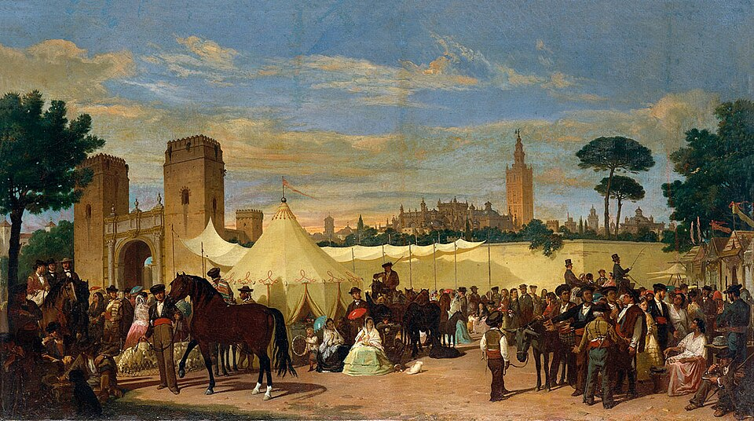
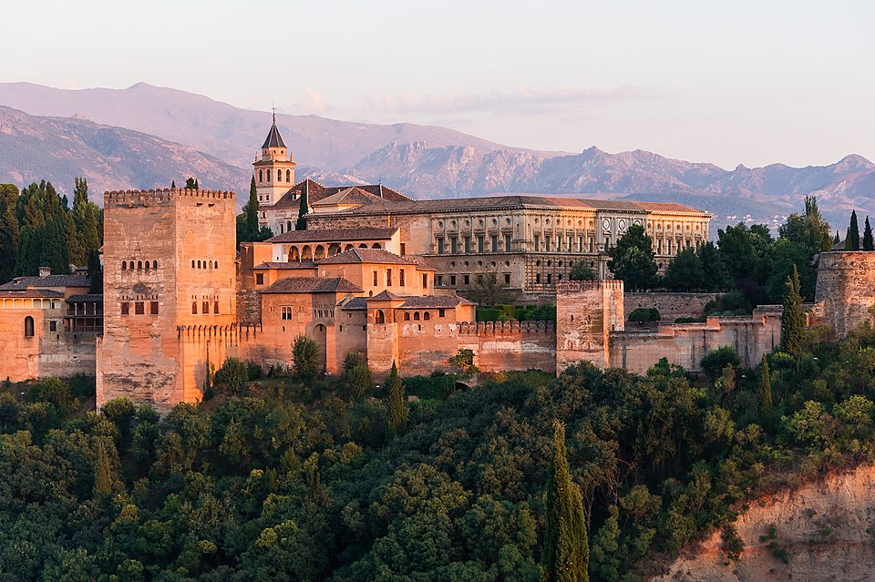

¿Qué es eso del patrimonio?
Cuando un turista visita tu localidad, no viene solo a tomar algo en una terraza. Viene a descubrir algo especial: su historia, su arte, sus tradiciones y su gente.
Eso, en conjunto, es el patrimonio cultural. Se divide en dos tipos:
- Patrimonio material: cosas que se pueden tocar, construir o ver. Ej.: una iglesia, un castillo, una plaza, una fuente antigua, un puente romano, un museo...
- Patrimonio inmaterial: tradiciones, fiestas, canciones, formas de hacer cosas. Ej.: la Semana Santa, una romería, una receta típica, un baile tradicional, la forma de hablar...


Tu localidad, por pequeña que sea, seguro que tiene patrimonio. Quizá no sea la catedral de Sevilla o la Alhambra de Granada, pero cada pueblo tiene rincones con historia: la calle más antigua, el lavadero donde iban las abuelas, la fábrica de harina, la plaza donde se reunían los vecinos…
Tu misión en esta tarea es convertiros en arqueólogos y arqueólogas digitales: investigar, descubrir y seleccionar el mejor patrimonio de tu localidad para mostrarlo en el vídeo-guía turística.
¡No es oro todo lo que reluce!
¡Ojo con las fuentes! No todo lo que brilla en Internet es oro
Recuerda las pautas que hay que seguir para hacer búsquedas de información en Internet, cómo la seleccionamos, cómo respetamos su autoría y cómo compartimos esa información.
Cuando busques información sobre tu pueblo, te encontrarás con de todo: páginas oficiales del ayuntamiento, blogs personales, vídeos de turistas, foros, Wikipedia, redes sociales…
No todas las fuentes son igual de fiables. Una fuente fiable es aquella que:
- Está actualizada (tiene fecha reciente).
- Muestra quién la ha escrito (autor o institución reconocible).
- No tiene faltas de ortografía ni noticias inventadas.
- En el caso de webs oficiales, suelen terminar en .gob, .edu o ser del propio ayuntamiento.
Consejo de oro: No te quedes con la primera página que veas. Contrasta la información: si tres webs diferentes dicen lo mismo, es más probable que sea cierto.
Y recuerda: si usas una imagen o una foto, debes citar de dónde la has sacado (y si es de Google Imágenes, asegúrate de que sea libre de derechos o de que pidas permiso al autor).